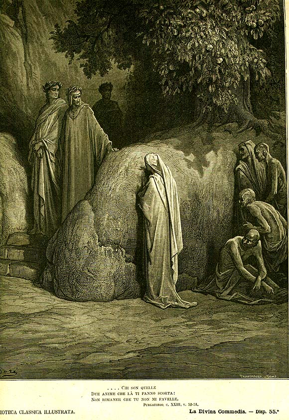

Песнь 23 из 33
Чревоугодие: иссохшие лица. Форезе

Кратко
Чревоугодники истощены до неузнаваемости: иссохшие, с провалившимися глазами, они томятся голодом и жаждой возле дерева с недостижимым плодом и пахучей водой. Их лица так измождены, что в чертах «читается слово OMO» (человек). Данте едва узнаёт старого друга — Форезе Донати. Тот объясняет, что так быстро поднялся сюда благодаря неустанным молитвам своей верной вдовы Неллы, и попутно горько корит распущенность флорентийских женщин.
Главные моменты
- Кара — мучительный голод и жажда у недостижимого плода.
- Изнурённые лица: в чертах «читается OMO».
- Тёплая встреча со старым другом Форезе Донати.
- Молитвы верной вдовы Неллы ускорили его очищение.
Значение
Сила молитвы любящих за умерших; покаяние и дружба на месте былого распутства.